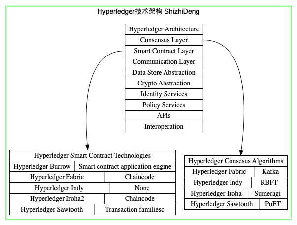

Technical Analysis of Hyperledger
Technical Analysis of Hyperledger
CreateDate: 2020-02-14
UpdateDate: 2020-02-27
Author: ShizhiDeng
Update content:
2020-02-27
1
2
3
4
5
6
7
8完成Hyperledger技术分析多个主题：比如基本信息、技术架构、技术分析之解决的
问题1：在分布式数据库中如何分享数据。
问题2:如何实现Hyperledger的模块化特性。
问题3：Hyperledger如何实现交易的一致性和有效性，也就是共识算法的技术细节
参考文献
1. An Introduction to Hyperledger
2. Hyperledger Architecture, Volume 1 Introduction to Hyperledger Business Blockchain Design Philosophy and Consensus
Some basic information about Hyperledger[^ 1 ][^ 2 ]
- What is Hyperledger
Hyperledger is an open source collaborative effort created to advance cross-industry blockchain technologies. It is a global collaboration, hosted by The Linux Foundation, including leaders in finance, banking, Internet of Things, supply chains, manufacturing, and Technology. - Some numbers about Hyperledger
Hyperledger began in 2015.
As of publication date, Hyperledger has more than 230 organizations as members—from Airbus to VMware—as well as 10 projects with 3.6 million lines of code, 10 active working groups, and close to 28,000 participants who have come to 110+ meetups around the world. Through 2017, the project was mentioned in the press an average of 1,500 times a month. - Current Hyperledger projects: Frameworks and Tools
The Hyperledger greenhouse structure is shown in the figure 1 as following:
Hyperledger Design Philosophy
We recognize that different enterprise scenarios have different requirements for confirmation times, decentralization, trust, and other issues, and that each issue represents a potential “optimization point” for the technology.
All Hyperledger projects follow the same design philosophy. All our projects must be:- Modular
- Highly secure
- Interoperable
- Cryptocurrency-agnostic
Complete with APIs

- Hyperledger Goals[^ 3 ]
- Create enterprise grade, open source, distributed ledger frameworks & code bases to support business transactions.
- Provide neutral, open, & community-driven infrastructures supported by technical and business governance.
- Build technical communities to develop blockchain and shared ledger POCs, use cases, field trials and deployments.
- Educate the public about the market opportunity for blockchain technology.
- Promote our community of communities taking a toolkit approach with many platforms and frameworks.
- Why open source for blockchain?
- Competitive features and capabilities
- No vendor lock-in, so customers can easily switch
- High-quality solutions
- The ability to customize and fix bugs, through access to source code
- Lower total cost of ownership
- some popular open source projects:Linux,Apache web server,MySQL,Fiox
- Application scenario of Hyperledger
- Banking—applying for a loan
- Financial services—post-trade processing
- Healthcare—credentialing physicians
- IT—managing portable identities
- Supply chain management—tracking fish from ocean to table
Current Hyperledger projects
Current Hyperledger projects: Frameworks
Hyperledger incubates and promotes a range of business blockchain technologies, including:- Distributed ledger frameworks
- Smart contract engines
- Client libraries
- Graphical interfaces
- Utility libraries
Sample applications
Summary of Hyperledger Frameworks:
| Hyperledger Frameworks | Description |
| :——————————: | :—————————————————————————————: |
| HYPERLEDGER BURROW | A modular blockchain client with a permissioned smart contract interpreter developed in part to the specifications of the Ethereum Virtual Machine (EVM). |
| HYPERLEDGER FABRIC | A platform for building distributed ledger solutions with a modular architecture that delivers a high degree of confidentiality, flexibility, resiliency, and scalability. This enables solutions developed with Fabric to be adapted for any industry. |
| HYPERLEDGER INDY | A distributed ledger that provides tools, libraries, and reusable components purpose-built for decentralized identity. |
| HYPERLEDGER IROHA | A blockchain framework designed to be simple and easy to incorporate into enterprise infrastructure projects. |
| HYPERLEDGER SAWTOOTH | A modular platform for building, deploying, and running distributed ledgers. Sawtooth features a new type of consensus, proof of elapsed time (PoET) which consumes far fewer resources than proof of work (PoW). |
Current Hyperledger projects: Tools
Hyperledger incubates and promotes a range of business blockchain technologies, including tools and utility libraries.The Hyperledger strategy encourages the re-use of common building blocks, enables rapid innovation of components, and promotes interoperability between projects.
Summary of Hyperledger Tools:
| Hyperledger Frameworks | Description |
| :——————————: | :—————————————————————————————: |
| HYPERLEDGER CALIPER | A blockchain benchmark tool that measures the performance of any blockchain by using a set of predefined use cases. |
| HYPERLEDGER CELLO | A set of tools to bring the on-demand deployment model to the blockchain ecosystem with automated ways to provision and manage blockchain operations that reduce effort. |
| HYPERLEDGER COMPOSER | An open development toolset and framework to make developing blockchain applications easier. |
| HYPERLEDGER EXPLORER | A dashboard for viewing information on the network, including blocks, node logs, statistics, smart contracts, and transactions. |
| HYPERLEDGER QUILT | A set of tools that offer interoperability by implementing ILP, which is primarily a payments protocol designed to transfer value across distributed and non-distributed ledgers. |
Technology of Hyperleger
All Hyperledger projects follow a design philosophy that includes a modular extensible approach, interoperability, an emphasis on highly secure solutions, a token-agnostic approach with no native cryptocurrency, and the development of a rich and easy-to- use Application Programming Interface (API). The Hyperledger Architecture WG has distinguished the following business blockchain components:
- Consensus Layer - Responsible for generating an agreement on the order and confirming the correctness of the set of transactions that constitute a block.
- Smart Contract Layer - Responsible for processing transaction requests and determining if transactions are valid by executing business logic.
- Hyperledger Burrow - Smart contract application engine
- Hyperledger Fabric - Chaincode
- Hyperledger Indy - None
- Hyperledger Iroha2 - Chaincode
- Hyperledger Sawtooth - Transaction familiesc
- Communication Layer - Responsible for peer-to-peer message transport between the nodes that participate in a shared ledger instance.
- Data Store Abstraction - Allows different data-stores to be used by other modules.
- Crypto Abstraction - Allows different crypto algorithms or modules to be swapped out without affecting other modules.
- Identity Services - Enables the establishment of a root of trust during setup of a blockchain instance, the enrollment and registration of identities or system entities during network operation, and the management of changes like drops, adds, and revocations. Also, provides authentication and authorization.
- Policy Services - Responsible for policy management of various policies specified in the system, such as the endorsement policy, consensus policy, or group management policy. It interfaces and depends on other modules to enforce the various policies.
- APIs - Enables clients and applications to interface to blockchains.
Interoperation - Supports the interoperation between different blockchain instances.

Possible improvement in Hyperledger
- The future of blockchain(Hyperledger Participants’ opinion)
- modular
- open-source
- easy to use.
Hyperledger design philosophy for permissioned blockchain networks[^ 5 ]
Hyperledger consensus technical analysis[^ 5 ]
approach optimizes the development of flexible, interoperable enterprise blockchain technologies
a generalized reference architecture for consensus
Technical Analysis
The road of technical analysis accord to following route. Especially, the problems that I list below are common and basic:
- What is the problem?
- Technical solution of the problem.
- Evaluation of the solution.
- My solution and thinking into the problem.
Problem1:share data in a distributed database
Problem description: Many people will want to share data in a distributed database, but no single owner will be trusted by every user.
Solution: distributed ledger technology (DLT).
Difficulty: Security,privacy and performance are incompatible.So no one blockchain will work best for all applications.It suggests that we’ll need a variety of different blockchains that can all communicate and interact seamlessly.
The concerns according to above analysis: modular and interoperable.
Problem2: How to achieve the modular feature of a blockchain
- Solution1: work by Hyperledger
- 分层：包括共识层、智能合约层、通信层、数据存储抽象、加密抽象、认证服务、策略服务、API、交互操作等
- 针对私有链business blockchain，hyperledger共识层也分成了两部分：1. Ordering of transactions 2. Validating transactions
Problem3: How to achieve the interoperable feature of a blockchain
Problem4: How to achieve the agreement of transaction and validation of transaction in Hyperledger?
- Solution: Consensus in Hyperledger frameworks.
- Consensus(Hyperledger business blockchain frameworks) is divided to two seperate activities:
- Ordering of transactions
- Validating transactions
- The consensus process flow:
- receiving the transactions from the client application.
- ordering service: order transactions
- can be implemented in different ways: a centralized service(development and testing) and distributed protocols(different network and node fault models)
- confidentiality of the transactions: the transaction content can be hashed or encrypted.
- Transactions are submitted via an interface to the ordering service.
- validate transactions: consensus depends on the smart contract layer(because it contains the business logic behind what makes a transaction valid.)
- validation errors:
- syntax errors: invalid inputs, unverifiable signature, and repeated transaction (due to error or replay attacks)
- logic errors: policy driven whether to continue processing or not. (Example: result in double-spend or versioning control failure. )
- validation errors:
Problem2:interoperability of different blockchains
Problem description: We’ll find merit in many different blockchains.In many scenarios,different blockchains need communication with each other.
Solution:
References
[^ 2 ]: An Introduction to HyperledgerHyperledger介绍，基本信息，目标，当前项目，应用场景等。
[^ 3 ]: Hyperledger Overview介绍内容的总结PPT
[^ 4 ]: 开源技术微讲堂：区块链和 HyperLedger 系列
[^ 5 ]: Hyperledger Architecture, Volume 1 Introduction to Hyperledger Business Blockchain Design Philosophy and Consensus